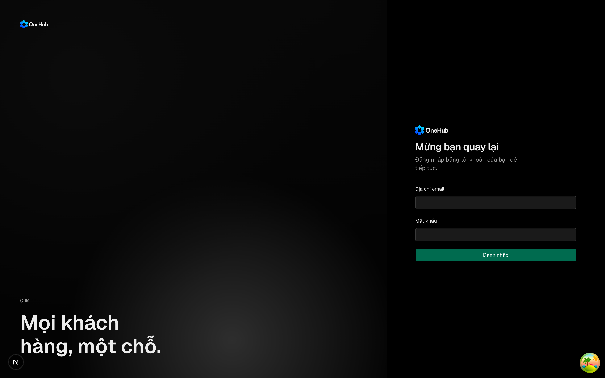

| Eval | Tiêu chí | Loại | Verdict | run_id | verified_at |
|---|---|---|---|---|---|
| E1 | AC-1 | test | PASS | minted-quen-mat-khau-E1-r3 | 2026-09-26T01:16:19Z |
| E2 | AC-1 | test | PASS | minted-quen-mat-khau-E2-r3 | 2026-09-26T01:16:19Z |
| E3 | AC-2 | test | PASS | muhp8ijdqfel | 2026-09-26T01:16:19Z |
| E4 | AC-2 | test | PASS | minted-quen-mat-khau-E4-r3 | 2026-09-26T01:16:19Z |
| E5 | AC-2 | test | PASS | minted-quen-mat-khau-E5-r3 | 2026-09-26T01:16:19Z |
| E6 | AC-3 | test | PASS | minted-quen-mat-khau-E6-r3 | 2026-09-26T01:16:19Z |
| E7 | AC-4 | test | PASS | muhp8k5pcjvy | 2026-09-26T01:16:19Z |
| E8 | AC-5 | test | PASS | muhp8il74klv | 2026-09-26T01:16:19Z |
| E9 | AC-6 | test | PASS | muhp8kn91ken | 2026-09-26T01:16:19Z |
| E10 | AC-7 | test | PASS | muhp8imro9mq | 2026-09-26T01:16:19Z |
| E11 | AC-8 | test | PASS | minted-quen-mat-khau-E11-r3 | 2026-09-26T01:16:19Z |
| E12 | AC-9 | test | PASS | muhp8unnc4hz | 2026-09-26T01:16:19Z |
| E13 | AC-9 | test | PASS | minted-quen-mat-khau-E13-r3 | 2026-09-26T01:16:19Z |
| E14 | AC-10 | test | PASS | muhp8wwr99oa | 2026-09-26T01:16:19Z |
| E15 | AC-11 | test | PASS | muhp8x3hsk00 | 2026-09-26T01:16:19Z |
| E16 | AC-5 | test | PASS | minted-quen-mat-khau-E16-r3 | 2026-09-26T01:16:19Z |
| E17 | AC-12 | test | PASS | minted-quen-mat-khau-E17-r3 | 2026-09-26T01:16:19Z |
| E18 | AC-12 | ui-check | PASS | minted-quen-mat-khau-E18-r3 | 2026-09-26T01:16:19Z |
| E19 | AC-12 | test | PASS | minted-quen-mat-khau-E19-r3 | 2026-09-26T01:16:19Z |
| E20 | AC-13 | judgment | PASS (ĐỀ XUẤT — CHỜ HUMAN_OVERRIDE, T3) | — | — |
| E21 | AC-1 | ui-check | PASS | minted-quen-mat-khau-E21-r3 | 2026-09-26T01:16:19Z |
| E22 | AC-14 | test | PASS | minted-quen-mat-khau-E22-r3 | 2026-09-26T01:16:19Z |
| E23 | AC-14 | test | PASS | minted-quen-mat-khau-E23-r3 | 2026-09-26T01:16:19Z |
| E24 | AC-15 | test | PASS | muhp95go69ps | 2026-09-26T01:16:19Z |
AC-1: Given `RESEND_API_KEY` và `MAIL_FROM` đều chưa khai, When màn đăng nhập hỏi `sso.signInOptions`, Then cờ `quenMatKhau` là `false`, màn đăng nhập không có liên kết «Quên mật khẩu?», và mở thẳng `/quen-mat-khau` thì bị đưa về `/sign-in`. (cross-layer)
1 expect() calls Ran 1 test across 1 file. [617.00ms] test-run: dropped crm_muhp8kfa0q4a_test
AC-1: Given `RESEND_API_KEY` và `MAIL_FROM` đều chưa khai, When màn đăng nhập hỏi `sso.signInOptions`, Then cờ `quenMatKhau` là `false`, màn đăng nhập không có liên kết «Quên mật khẩu?», và mở thẳng `/quen-mat-khau` thì bị đưa về `/sign-in`. (cross-layer)
0 fail 4 expect() calls Ran 2 tests across 1 file. [685.00ms]
AC-2: Given cả hai biến đã khai, When một người chưa đăng nhập mở `/sign-in`, Then cờ `quenMatKhau` là `true`, dưới ô mật khẩu có liên kết «Quên mật khẩu?» trỏ tới `/quen-mat-khau`, và mở đường đó khi chưa đăng nhập thì trang xin liên kết hiện ra chứ không bị đẩy về `/sign-in`. (cross-layer)
Ran 5 tests across 1 file. [676.00ms] test-run: dropped crm_muhp8ijdqfel_test Test summary: quen-mat-khau-co.spec.ts (1 pass) + auth.e2e.spec.ts (5 pass) = 6 pass total, 0 fail
AC-2: Given cả hai biến đã khai, When một người chưa đăng nhập mở `/sign-in`, Then cờ `quenMatKhau` là `true`, dưới ô mật khẩu có liên kết «Quên mật khẩu?» trỏ tới `/quen-mat-khau`, và mở đường đó khi chưa đăng nhập thì trang xin liên kết hiện ra chứ không bị đẩy về `/sign-in`. (cross-layer)
0 fail 14 expect() calls Ran 6 tests across 1 file. [5.00ms]
AC-2: Given cả hai biến đã khai, When một người chưa đăng nhập mở `/sign-in`, Then cờ `quenMatKhau` là `true`, dưới ô mật khẩu có liên kết «Quên mật khẩu?» trỏ tới `/quen-mat-khau`, và mở đường đó khi chưa đăng nhập thì trang xin liên kết hiện ra chứ không bị đẩy về `/sign-in`. (cross-layer)
0 fail 3 expect() calls Ran 1 test across 1 file. [418.00ms]
AC-3: Given chỉ một trong hai biến `RESEND_API_KEY`, `MAIL_FROM` được khai, When mô-đun cấu hình xác thực nạp, Then nó ném lỗi nêu tên cả hai biến.
0 fail 10 expect() calls Ran 4 tests across 1 file. [102.00ms]
AC-4: Given thư đã cấu hình, When xin liên kết cho bốn loại địa chỉ — có tài khoản và còn quyền vào, không có tài khoản, có tài khoản nhưng đã bị thu quyền vào, có tài khoản chỉ vào bằng Google — Then cả bốn nhận cùng một mã trạng thái và cùng một thân trả lời, giống nhau từng byte.
8 expect() calls Ran 3 tests across 1 file. [300.00ms]
AC-5: Given dịch vụ thư trả lời chậm 1,5 giây, When xin liên kết cho một địa chỉ có tài khoản và còn quyền vào, Then câu trả lời về trước khi thư gửi xong (dưới 1,5 giây), chênh trung vị so với một địa chỉ không có tài khoản nằm dưới ngưỡng khai trong eval, và lá thư vẫn được gửi đi sau đó.
4 expect() calls Ran 2 tests across 1 file. [3.44s]
AC-6: Given thư đã cấu hình, When xin liên kết cho một địa chỉ có tài khoản và còn quyền vào (kể cả tài khoản chỉ vào bằng Google), Then đúng một thư được gửi tới chính địa chỉ đó, chứa liên kết `<APP_URL>/dat-mat-khau/<chìa>` với chìa có hàng tương ứng trong kho, và câu hạn dùng mang số phút suy từ `PASSWORD.tokenTtlSeconds`; với địa chỉ không có tài khoản hoặc đã bị thu quyền thì không thư nào được gửi.
11 expect() calls Ran 3 tests across 1 file. [272.00ms]
AC-7: Given một người đã xin hai liên kết, When người đó đặt mật khẩu thành công bằng một trong hai, Then dùng lại chính liên kết ấy thì bị từ chối, liên kết còn lại cũng bị từ chối, và mật khẩu vừa đặt không đổi.
6 expect() calls Ran 3 tests across 1 file. [2.11s]
AC-8: Given một liên kết xin qua thư, When nó được dùng sau khi đã quá `PASSWORD.tokenTtlSeconds` kể từ lúc xin, Then bị từ chối và mật khẩu không đổi; mốc hết hạn lưu trong kho đúng bằng lúc xin cộng `PASSWORD.tokenTtlSeconds`.
5 expect() calls Ran 1 test across 1 file. [349.00ms] test-run: dropped crm_muhp8wc8oqyb_test
AC-9: Given cùng một nơi gửi đã xin ba lần trong 60 giây, When nó xin lần thứ tư, dù với địa chỉ nào, Then máy chủ trả 429, không thư nào được gửi thêm, và màn xin liên kết hiện câu riêng cho ca quá lượt nói đúng số phút phải chờ; quá 60 giây kể từ lượt cuối thì xin lại được. (cross-layer)
3 expect() calls Ran 3 tests across 1 file. [321.00ms]
AC-9: Given cùng một nơi gửi đã xin ba lần trong 60 giây, When nó xin lần thứ tư, dù với địa chỉ nào, Then máy chủ trả 429, không thư nào được gửi thêm, và màn xin liên kết hiện câu riêng cho ca quá lượt nói đúng số phút phải chờ; quá 60 giây kể từ lượt cuối thì xin lại được. (cross-layer)
0 fail 13 expect() calls Ran 6 tests across 1 file. [415.00ms]
AC-10: Given một người vừa đặt lại mật khẩu thành công bằng liên kết, When việc đặt xong, Then đúng một thư báo «mật khẩu vừa được đổi» được gửi tới địa chỉ của tài khoản; dịch vụ thư chậm 1,5 giây không làm câu trả lời đặt mật khẩu chờ theo, dịch vụ thư lỗi không làm hỏng việc đặt mật khẩu, và một lượt đặt mật khẩu bị từ chối (liên kết sai, đã dùng hay quá hạn) thì không gửi thư báo nào.
8 expect() calls Ran 4 tests across 1 file. [3.57s]
AC-11: Given dịch vụ thư trả lỗi hoặc không với tới được, When xin liên kết cho một địa chỉ có tài khoản, Then câu trả lời vẫn y như AC-4, và dòng log của lần gửi hỏng có mã lỗi nhưng không có địa chỉ email nào và không có thân trả lời của dịch vụ thư.
7 expect() calls Ran 3 tests across 1 file. [282.00ms]
AC-5: Given dịch vụ thư trả lời chậm 1,5 giây, When xin liên kết cho một địa chỉ có tài khoản và còn quyền vào, Then câu trả lời về trước khi thư gửi xong (dưới 1,5 giây), chênh trung vị so với một địa chỉ không có tài khoản nằm dưới ngưỡng khai trong eval, và lá thư vẫn được gửi đi sau đó.
0 fail 5 expect() calls Ran 3 tests across 1 file. [15.00ms]
AC-12: Given trang `/quen-mat-khau`, When người dùng gửi địa chỉ, Then lúc đang gửi nút tắt và ghi «Đang gửi…»; gửi xong thì form nhường chỗ cho màn «Kiểm tra hộp thư» mang số phút thật; lỗi mạng hoặc lỗi máy chủ thì hiện câu lỗi kèm cách thử lại, vẫn ở form, chữ đã gõ còn nguyên; và 429 thì hiện câu quá lượt thay cho màn «đã gửi».
0 fail 13 expect() calls Ran 6 tests across 1 file. [415.00ms]
AC-12: Given trang `/quen-mat-khau`, When người dùng gửi địa chỉ, Then lúc đang gửi nút tắt và ghi «Đang gửi…»; gửi xong thì form nhường chỗ cho màn «Kiểm tra hộp thư» mang số phút thật; lỗi mạng hoặc lỗi máy chủ thì hiện câu lỗi kèm cách thử lại, vẫn ở form, chữ đã gõ còn nguyên; và 429 thì hiện câu quá lượt thay cho màn «đã gửi».
Driver là headless Puppeteer script chạy qua Bash (không phải browser tool có read_network_requests/read_console_messages) => networkObserved = "n-a (driver)". Bản thân script có tự chặn mạng bằng setRequestInterception (thật góc /quen-mat-khau đối với request-password-reset) và có gửi 4 lần thật tới máy chủ thật (429 thật qua better-auth client thật) — hai phép đo này đã là assertion 11+13 ở trên, tính vào KẾT LUẬN của script, không cần lớp network riêng. Dọn dẹp: script tự kill process group API(3301)+APP(3300) và rmdir khoá cổng sau khi chụp; xác nhận lại bằng lsof: cả hai cổng đã trả về trống sau khi chạy xong, thư mục .acceptance-runs/quen-mat-khau/cong.khoa đã bị gỡ.
AC-12: Given trang `/quen-mat-khau`, When người dùng gửi địa chỉ, Then lúc đang gửi nút tắt và ghi «Đang gửi…»; gửi xong thì form nhường chỗ cho màn «Kiểm tra hộp thư» mang số phút thật; lỗi mạng hoặc lỗi máy chủ thì hiện câu lỗi kèm cách thử lại, vẫn ở form, chữ đã gõ còn nguyên; và 429 thì hiện câu quá lượt thay cho màn «đã gửi».
"hits": [], "findings": [] }
AC-13: Given các chữ mới trên màn đăng nhập, trang xin liên kết và hai lá thư, When một nhân viên kinh doanh người Việt đọc lần đầu, Then họ biết phải làm gì tiếp ở mỗi màn, không câu nào ngầm nói địa chỉ có tài khoản hay không, và chữ theo luật nhãn của CONTEXT.md, không có thuật ngữ kỹ thuật tự đúc.
Phán đoán: panel giữ nguyên từ round 2 — inputs không đổi, không chấm lại; rationale xem round đó.
AC-1: Given `RESEND_API_KEY` và `MAIL_FROM` đều chưa khai, When màn đăng nhập hỏi `sso.signInOptions`, Then cờ `quenMatKhau` là `false`, màn đăng nhập không có liên kết «Quên mật khẩu?», và mở thẳng `/quen-mat-khau` thì bị đưa về `/sign-in`. (cross-layer)

NETWORK TRUTH: driver của eval này là một script Bash gọi puppeteer-core nội bộ (rang/chup.mjs), không phải Claude Browser tool của phiên này nên không có đường đọc network/console trực tiếp -> networkObserved = "n-a (driver)". (Có một file evidence/ E21-network.txt cũ, mtime 07:47, từ một lần chạy khác trước đó khác với lần chạy này lúc 08:18 — không dùng nó làm bằng chứng cho lần chạy hiện tại.) KẾT LUẬN CHUNG: mọi assertion pass, không lệnh nào bị công cụ giết (chạy đầy đủ trong giới hạn timeout), không sửa code, không dùng git/pkill nào ngoài script được chỉ định -> exit code = 0.
AC-14: Given hai người ở hai địa chỉ khác nhau cùng đi qua proxy /api của app, When một người xin quá lượt, Then người kia vẫn xin được; và một yêu cầu tự đặt header x-forwarded-for hay header địa chỉ giả (không có chữ ký đúng của proxy) không né được giới hạn — máy chủ chỉ tin địa chỉ do proxy của chính mình ký. Cùng cơ chế áp cho luật chống dò mật khẩu ở màn đăng nhập. (cross-layer)
2 expect() calls Ran 2 tests across 1 file. [271.00ms]
AC-14: Given hai người ở hai địa chỉ khác nhau cùng đi qua proxy /api của app, When một người xin quá lượt, Then người kia vẫn xin được; và một yêu cầu tự đặt header x-forwarded-for hay header địa chỉ giả (không có chữ ký đúng của proxy) không né được giới hạn — máy chủ chỉ tin địa chỉ do proxy của chính mình ký. Cùng cơ chế áp cho luật chống dò mật khẩu ở màn đăng nhập. (cross-layer)
0 fail 5 expect() calls Ran 3 tests across 1 file. [8.00ms]
AC-15: Given một người gọi mở yêu cầu POST tới /api/auth/* rồi ngắt kết nối khi mới gửi được một phần thân, When máy chủ xử lý yêu cầu dở đó, Then tiến trình API vẫn sống và trả lời bình thường cho yêu cầu kế tiếp; và lớp kiểm địa chỉ không đổi cách máy chủ trả lời bất kỳ yêu cầu nào so với better-auth gốc (vd POST JSON thân rỗng).
2 expect() calls Ran 2 tests across 1 file. [956.00ms]